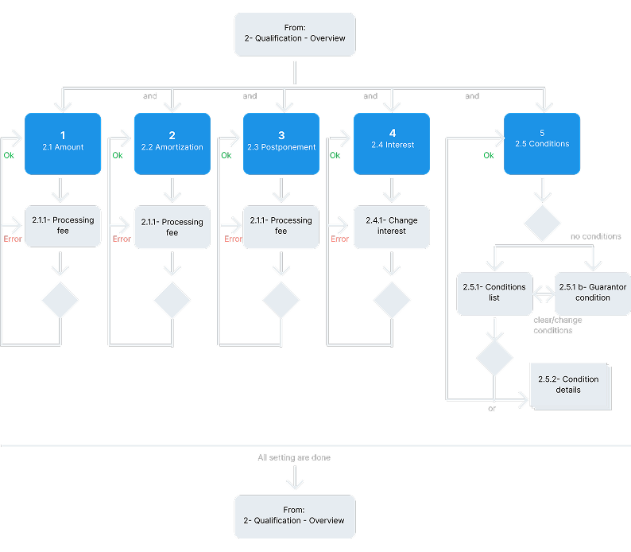
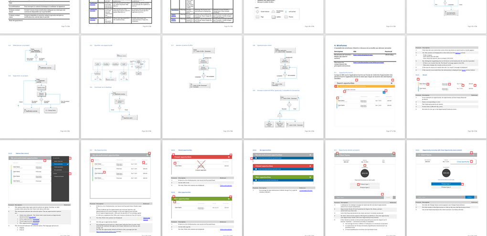

Challenge
Challenge
La BDC devait remplacer un processus lent par une solution mobile en temps réel. L'objectif était de permettre aux directeurs de comptes de qualifier et de signer des prêts directement lors des rencontres clients, simplifiant ainsi l'expérience pour le personnel et les entrepreneurs.
BDC needed to replace a slow process with a real-time mobile solution. The goal was to empower Account Managers to qualify and sign loans directly during client meetings, streamlining the experience for both staff and entrepreneurs.
Mon rôle
My Role
Lead UX Designer. J'ai piloté l'ensemble du processus de design, de la recherche terrain initiale à la livraison des spécifications fonctionnelles.
Lead UX Designer. I led the entire design process, from initial field research to the delivery of functional specifications.
L'impact
The Impact
- Efficacité opérationnelle : Réduction du temps d'autorisation de prêt de 10 jours à moins de 24 heures.
- Expérience fluide : L'ensemble du processus de demande et de signature sur place se fait désormais en quelques minutes.
- Déploiement : Déploiement réussi sur iPad et Surface Pro pour les équipes de la BDC à l'échelle nationale.
- Performance mesurable : Sécurisation et facilitation de 240 M$ de transactions lors des premières phases de déploiement.
- Operational Efficiency: Slashed loan approval time from 10 days to under 24 hours.
- Seamless Experience: The entire on-site application and signature process is now completed in just few minutes.
- Deployment: Successfully rolled out on iPad and Surface Pro for BDC teams nationwide.
- Measurable Performance: Facilitated and secured $240M in transaction volume during early deployment phases.
« Auparavant, cela prenait 10 jours, avec d'incalculables télécopies et de la paperasse. C'était trop complexe et, pour nous, tout simplement inacceptable. »
“It used to take 10 days, involving endless faxes and paperwork. It was overly complex and, for us, simply unacceptable.”— Michael Denham, Président et Chef de la direction, BDC — Michael Denham, President and CEO, BDC
« Notre directeur de compte a ouvert son iPad, a suivi tout le processus et cela n'a pris que 15 minutes. »
“Our account manager opened his iPad, went through the entire process, and it only took 15 minutes.”— Angela Cadorin, Entrepreneure — Angela Cadorin, Entrepreneur
Le processus
The Process
Recherche utilisateur
User Research
Entretiens avec les directeurs de comptes pour identifier les données « essentielles sur le terrain » et les contraintes mobiles (environnements bruyants/partagés).
Conducted interviews with Account Managers to identify "field-essential" data and mobile constraints (noisy/shared environments).
Stratégie de contenu
Content Strategy
Audit des données existantes et application d'un filtre strict basé sur la pertinence et la valeur pour réduire considérablement la densité d'information.
Audited existing data and applied a strict filter based on relevance and value to drastically reduce information density.
Architecture d'information
Information Architecture
Structuration de l'application autour de trois parcours utilisateurs clés : Consulter les opportunités, Qualifier les offres et Finaliser les signatures.
Structured the app around three core user journeys: Consult opportunities, Qualify offers, and Finalize signatures.

Prototypage interactif
Interactive Prototyping
Création de wireframes axés sur la tablette, privilégiant les interactions tactiles et un langage visuel minimaliste.
Created tablet-first wireframes focusing on touch interactions and a minimalist visual language.
Tests d'utilisabilité & Validation
Usability Testing & Validation
Tests des prototypes interactifs avec les utilisateurs pour identifier les points de friction et valider la simplicité d'utilisation.
Tested interactive prototypes with users to identify friction points and validate the ease of use.
Transfert & Spécifications
Hand-off & Documentation
Livraison de spécifications fonctionnelles détaillées aux développeurs pour garantir une implémentation fidèle.
Delivered detailed functional specifications to developers to ensure a high-fidelity implementation.
